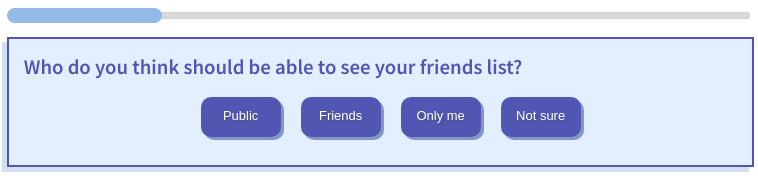
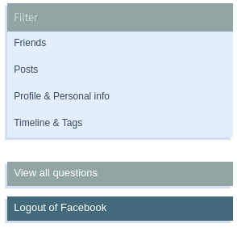

Chrome New Tab is a crowdsourcing plugin that helps you manage your privacy online.
This plugin overrides your new tab page and gives you access to multiple privacy management applications!
Facebook Setting Checkup
Facebook Setting Checkup is one of the applications currently running on the Chrome New Tab. In this application you will answer questions regarding you privacy settings on Facebook. You can answer as many questions as you want, the progress bar on top of the question will keep track of your progress.

Facebook Privacy Question with Progress Bar
Once you answer a question, you will be able to see your current setting on Facebook. Use the following buttons to advance to the next question or change your current Facebook setting. Note: your response will only be recorded after you press the 'Next Question' button.
Next Question and Change Settings buttons
You can use the side menu to filter questions by category, view all questions, or logout of Facebook.

Side Menu
Please note that we will collect your cookies from facebook.com to display your current privacy settings. By clicking 'Accept and continue', you agree to have your Facebook cookies collected, stored, and used for the duration of this experiment. Note: when you click the button, an alert from Chrome will pop up requesting permission to collect your cookies.